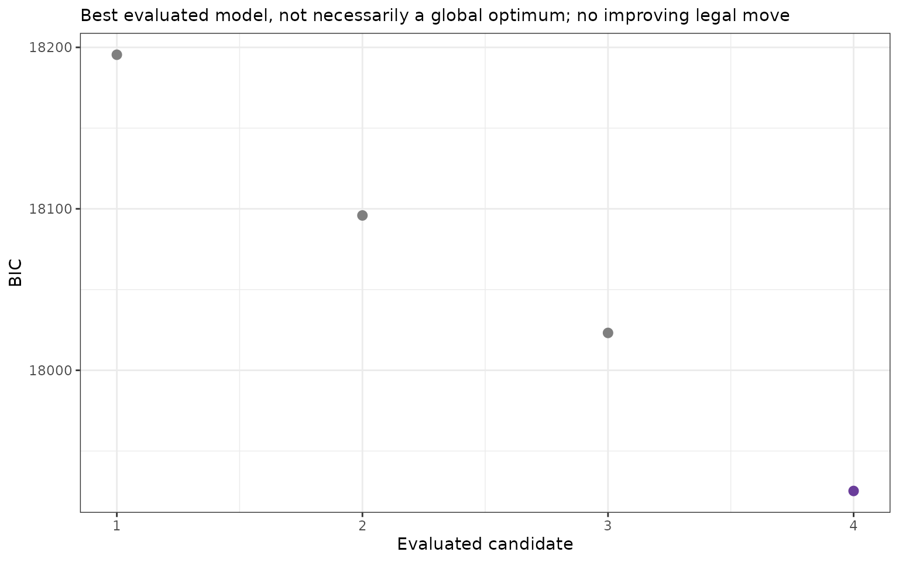
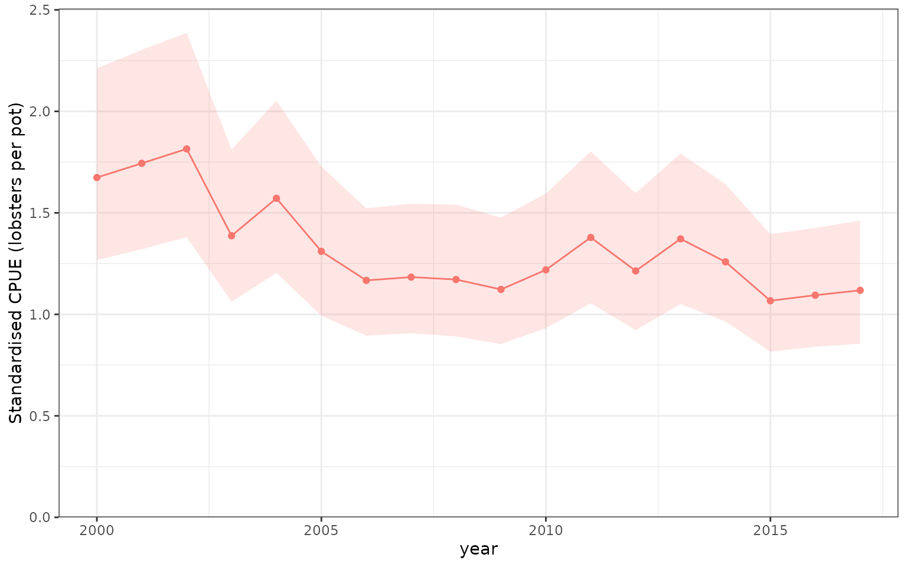

Search a scientific candidate set
search_cpue() searches a constrained set of
model specifications. It protects the annual index term,
exposure offsets, and essential random or spatial structure, then
compares eligible candidates using a stated native criterion. The
response can be CPUE, a count with an exposure offset, or another
supported response: it need not be a catch.
This adds a different workflow to the existing interfaces:
-
check_cpue()checks a model; its residual p-values are not term-removal rules. -
table_criterion()compares models that have already been fitted. -
influ_steps()andplot_step()show changes in annual contrasts along a prescribed sequence, rather than choosing that sequence. -
search_cpue()evaluates legal candidates and records a recommendation, together with its constraints, fitting evidence, and stopping reason.
One search uses one model backend, response definition, and family/link. A common interface across backends does not make AIC, conditional AIC, and LOOIC interchangeable. See Model comparison.
The starting model is a maximal candidate model, not necessarily a saturated model: it contains the terms we are prepared to consider. A saturated model has enough freedom to reproduce every observation and is not required here.
A worked glmmTMB lobster example
We use the same simulated lobster observations as the main article. Each observation represents one pot, so its expected response is lobsters per pot. The negative-binomial model accounts for extra-Poisson variation; month is a random intercept. Soak time is an ordinary predictor here, not an exposure offset or a likelihood weight.
data(lobsters_per_pot)
lobster_model <- glmmTMB::glmmTMB(
lobsters ~ year + poly(depth, 3) + poly(soak, 3) + (1 | month),
data = lobsters_per_pot, family = glmmTMB::nbinom2()
)Inspect the plan before fitting
Without refit = TRUE, the function only prepares a plan.
It does not fit models, calculate criteria, run MCMC, or simulate
residuals. We nominate depth and soak as the only optional terms. The
annual term and monthly random intercept remain in every candidate. A
polynomial is one term block: all three basis coefficients move
together.
search_plan <- search_cpue(
lobster_model, year = "year", criterion = "BIC",
optional = ~ poly(depth, 3) + poly(soak, 3), max_models = 16
)
search_plan
#> <influ_search> glmmTMB / BIC
#> Mode: preflight only
#> Protected terms: 2
#> Evaluated candidates: 0
#> Stop: preflight_only
knitr::kable(search_plan$terms[c("term", "protected", "reason")])| term | protected | reason |
|---|---|---|
| year | TRUE | annual predictor |
| poly(depth, 3) | FALSE | optional term block |
| poly(soak, 3) | FALSE | optional term block |
| 1 | month | TRUE | essential random/spatial structure |
criterion = "auto" uses native AIC for frequentist
models and LOOIC for complete brms models. Here we explicitly choose
BIC, which applies a stronger parameter penalty at this sample size.
This is a choice of search criterion, not evidence that BIC is
universally preferable for CPUE standardisation.
Run a bounded ordering and backward search
The default direction = c("order", "backward") first
adds converged term blocks to the protected core, then considers
backward deletions. During ordering, a block can enter even if the
criterion worsens: the aim is an admissible maximal model. Backward
moves must improve the criterion. The recommended fit is the best
eligible model evaluated, which need not be the final
path entry or a global optimum.
lobster_search <- search_cpue(
lobster_model, year = "year", criterion = "BIC",
optional = ~ poly(depth, 3) + poly(soak, 3),
direction = c("order", "backward"), max_models = 16, refit = TRUE
)
lobster_search
#> <influ_search> glmmTMB / BIC
#> Mode: native refitting
#> Protected terms: 2
#> Evaluated candidates: 4
#> Stop: no_improving_legal_move
#> Best evaluated: lobsters ~ (year) + (poly(depth, 3)) + (poly(soak, 3)) + (1 | month) (17925.27)
knitr::kable(
lobster_search$candidates[c("candidate", "formula", "score", "status")],
digits = 2, row.names = FALSE
)| candidate | formula | score | status |
|---|---|---|---|
| 1 | lobsters ~ (year) + (1 | month) | 18195.44 | eligible |
| 2 | lobsters ~ (year) + (poly(depth, 3)) + (1 | month) | 18095.91 | eligible |
| 3 | lobsters ~ (year) + (poly(soak, 3)) + (1 | month) | 18023.16 | eligible |
| 4 | lobsters ~ (year) + (poly(depth, 3)) + (poly(soak, 3)) + (1 | month) | 17925.27 | eligible |
knitr::kable(lobster_search$path, digits = 2, row.names = FALSE)| step | phase | action | terms | candidate | score | improvement |
|---|---|---|---|---|---|---|
| 0 | order | start | 1 | 18195.44 | NA | |
| 1 | order | add | poly(soak, 3) | 3 | 18023.16 | 172.29 |
| 2 | order | add | poly(depth, 3) | 4 | 17925.27 | 97.89 |
This example retains both covariate blocks: automated searching need not delete something. Each distinct candidate is fitted at most once; revisiting it during backward checking reuses its recorded result. The original fit can also be reused when its specification and fitting controls match exactly.
plot(lobster_search)
Native BIC values for eligible lobster glmmTMB candidates evaluated by the constrained search. The purple point identifies the best evaluated candidate. Year and the monthly random intercept are protected, and the depth and soak-time polynomial blocks are optional. Candidate numbers describe evaluation order, not a continuous model dimension. Lower BIC is preferred within this comparable candidate set; this display is not a residual goodness-of-fit test.
Retrieve the fit and calculate the CPUE index
selected_model() returns the retained native fitted
model without refitting. It can go straight into the usual diagnostics
and index interfaces. We use the same fixed reference profile as the CPUE indices article: median observed
depth, a 24-hour soak, and monthly random effect zero. This zero-effect
reference is not integration over the distribution of months.
recommended_model <- selected_model(lobster_search)
reference <- data.frame(depth = median(lobsters_per_pot$depth), soak = 24)
recommended_index <- cpue_index(
recommended_model, year = "year", reference_data = reference,
units = "lobsters per pot"
)
knitr::kable(index_table(recommended_index), digits = 3, row.names = FALSE)| Year | Mean | SD | CV | Q0.025 | Q0.975 | Method | Distribution | Link |
|---|---|---|---|---|---|---|---|---|
| 2000 | 1.674 | 0.238 | 0.142 | 1.267 | 2.212 | standardised | nbinom2 | log |
| 2001 | 1.744 | 0.247 | 0.142 | 1.321 | 2.303 | standardised | nbinom2 | log |
| 2002 | 1.815 | 0.254 | 0.140 | 1.380 | 2.387 | standardised | nbinom2 | log |
| 2003 | 1.387 | 0.189 | 0.136 | 1.062 | 1.812 | standardised | nbinom2 | log |
| 2004 | 1.572 | 0.214 | 0.136 | 1.204 | 2.053 | standardised | nbinom2 | log |
| 2005 | 1.310 | 0.185 | 0.141 | 0.993 | 1.729 | standardised | nbinom2 | log |
| 2006 | 1.167 | 0.158 | 0.136 | 0.895 | 1.522 | standardised | nbinom2 | log |
| 2007 | 1.184 | 0.161 | 0.136 | 0.907 | 1.545 | standardised | nbinom2 | log |
| 2008 | 1.172 | 0.164 | 0.140 | 0.891 | 1.541 | standardised | nbinom2 | log |
| 2009 | 1.123 | 0.157 | 0.140 | 0.853 | 1.477 | standardised | nbinom2 | log |
| 2010 | 1.219 | 0.167 | 0.137 | 0.932 | 1.595 | standardised | nbinom2 | log |
| 2011 | 1.379 | 0.189 | 0.137 | 1.055 | 1.803 | standardised | nbinom2 | log |
| 2012 | 1.214 | 0.170 | 0.140 | 0.922 | 1.598 | standardised | nbinom2 | log |
| 2013 | 1.372 | 0.187 | 0.136 | 1.051 | 1.792 | standardised | nbinom2 | log |
| 2014 | 1.259 | 0.171 | 0.136 | 0.965 | 1.642 | standardised | nbinom2 | log |
| 2015 | 1.067 | 0.146 | 0.137 | 0.816 | 1.395 | standardised | nbinom2 | log |
| 2016 | 1.094 | 0.148 | 0.135 | 0.840 | 1.426 | standardised | nbinom2 | log |
| 2017 | 1.118 | 0.153 | 0.137 | 0.855 | 1.462 | standardised | nbinom2 | log |
plot_index(recommended_index)
Standardised expected lobsters per pot from the recommended lobster glmmTMB model, at the fixed depth and soak-time reference profile and monthly random effect zero. The ribbon is a pointwise 95% confidence interval conditional on this fitted model. It does not include uncertainty from searching and choosing the model, and the index is not an area-integrated biomass estimate.
Search results retain the best native fit by default.
keep_fits = "none" retains only the compact report;
keep_fits = "all" can be useful for a small shortlist, but
spatial or posterior model objects can be large. Printing, summarising,
and plotting the saved search never repeat fits or residual
simulations.
Compact retention limits the stored report and number of retained fits, not the native fitter’s peak RAM. Native LOO calculations for brms and spatial Hessian calculations can still require substantial temporary memory.
Explicitly search a non-essential random term
Random effects are protected by default. To ask whether a particular random term is needed, nominate that whole term explicitly. Here we examine the monthly intercept while holding the annual, depth, and soak specifications unchanged. This is a second scientific question, not an automatic licence to discard all random effects.
month_search <- search_cpue(
lobster_model, year = "year", optional = "1 | month",
direction = "backward", criterion = "BIC", max_models = 2, refit = TRUE
)
knitr::kable(
month_search$candidates[c("candidate", "formula", "score", "status")],
digits = 2, row.names = FALSE
)| candidate | formula | score | status |
|---|---|---|---|
| 1 | lobsters ~ (year) + (poly(depth, 3)) + (poly(soak, 3)) + (1 | month) | 17925.27 | eligible |
| 2 | lobsters ~ (year) + (poly(depth, 3)) + (poly(soak, 3)) | 18338.25 | eligible |
The coefficients and dispersion parameters are re-estimated in the reduced fit. Protecting a structure means keeping its specification, not fixing its numerical estimates. A BIC recommendation does not establish that removing a process is scientifically sensible; inspect uncertainty, residual structure, and the resulting index separately.
Annual interactions, exposure, and other backends
For annual-by-season coding such as fyear:season,
explicitly protect that annual block. This unexecuted example
illustrates a CRA-style specification; the data and fitted object are
supplied by the analyst, not by this vignette.
plan <- search_cpue(
seasonal_model, year = "fyear", include = ~ fyear:season,
optional = ~ poly(depth, 3) + poly(soak, 3), criterion = "BIC"
)
result <- search_cpue(
seasonal_model, year = "fyear", include = ~ fyear:season,
optional = ~ poly(depth, 3) + poly(soak, 3), criterion = "BIC",
refit = TRUE, max_models = 16
)Offsets, fitted rows, likelihood weights, binomial trial counts, and
the response definition must agree across candidates. For counts fitted
with offset(log(exposure)), that offset remains present. If
the response is already CPUE, adding an exposure offset again is not an
automatic default. Searches do not silently change the data subset as
terms are removed.
The same interface accepts GLM, mgcv GAM, lme4, glmmTMB, complete brms, sdmTMB, and univariate tinyVAST models, subject to supported formula and likelihood contracts. Backend-specific restrictions are explicit:
- Smooths are term blocks; essential random or multidimensional smooths remain protected unless deliberately nominated. Existing interaction hierarchy is preserved without inventing main effects for intentional interaction-only annual coding.
- Gaussian mixed models fitted with REML are refitted with ML when searching fixed effects, and that conversion is recorded.
- glmmTMB zero-inflation and dispersion formulas remain fixed in this increment. The search changes its main conditional formula only.
- A joint sdmTMB delta search needs
component = "occurrence"or"positive". The other formula, shared spatial domain, and process settings remain fixed; it is not simultaneous selection of both components. - Spatial fields, spatiotemporal processes, and meshes are not
automatically switched on or off. Compare deliberately fitted process
alternatives using
table_criterion()and the diagnostic interfaces. - Explicit positional parameter maps are not automatically remapped
when terms change. For mapped TMB fits, fit named candidate
specifications separately, then use
table_criterion(). Saved sdmTMB process formulas and binomial trial counts remain fixed, even if variables in the original call have since changed. - brms searches require new MCMC fits for changed models. Use an explicit candidate budget and native sampling controls; incomplete fits or unreliable LOO estimates cannot win. This vignette does not run MCMC.
# Preflight reports only: no refits or new criteria.
search_cpue(gam_model, year = "year", optional = ~ s(depth))
search_cpue(spatial_model, year = "year", optional = ~ depth)
search_cpue(delta_model, year = "year", component = "positive",
optional = ~ depth)
search_cpue(bayesian_model, year = "year", optional = ~ depth,
max_models = 6)What the search can and cannot establish
The report includes every evaluated specification, numerical status,
warnings, criterion, and stopping reason. Failed or incomparable
candidates remain visible but are ineligible. max_models
counts distinct attempts, including failures and a reused original fit.
Reaching the limit leaves a bounded result, not a claim that the search
finished exploring the candidate set.
The function is a fresh, backend-aware controller inspired by the
ordering and elimination workflow in buildmer,
rather than a call to buildmer::buildglmmTMB() under a
different name. Small native ML tests compare forward and backward BIC
selections with buildmer. This does not imply identical paths, tie
handling, random-effect eligibility rules, or finalisation for every
model. The glmmTMB model-evaluation
vignette also illustrates stats::drop1() and
MuMIn::dredge() workflows. Their ideas of protected terms,
interaction hierarchy, and comparable observations are useful, but
unrestricted all-subsets fitting is not the default here.
Native AIC is the frequentist default; BIC is optional. Native conditional AIC is available only where supported and validated, not through an invented generic mixed-model correction. Complete brms candidates use LOOIC rather than AIC. Comparisons across inappropriate likelihood targets, priors, response supports, or observations are rejected rather than ranked together.
Finally, the best observation-model score is not proof that the CPUE
index tracks abundance. Searching can favour a spurious specification,
and ordinary intervals after selection understate the full uncertainty
if model-selection uncertainty is ignored. Retain a scientifically
justified candidate set, check the shortlist with
check_cpue(), and examine index sensitivity using
plot_compare() or deliberately chosen step sequences before
accepting a model for assessment.